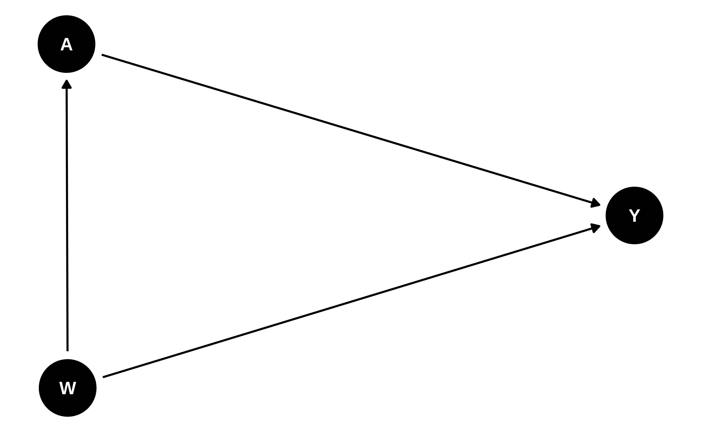

Translate scientific questions to statistical questions.
Define a statistical model based on knowledge about the scientific experiment or study that generated the data.
Identify a causal parameter as a function of the observed data distribution.
Explain the following statistical and causal assumptions alongside their implications: independent and identically distributed (i.i.d.), consistency, no unmeasured confounding, interference, positivity.
Introduction
The roadmap of statistical learning is concerned with the process of translating real-world scientific questions to mathematical formalisms necessary for formulating relevant statistical inference problems. This involves viewing data as a random variable (complete with its own underlying probability distribution), incorporating scientific knowledge into the choice of statistical model, selecting a statistical target parameter that represents an answer to the scientific question of interest, and developing efficient estimators of the statistical estimand.
The Roadmap
The roadmap is a six-stage process:
Define the data as a random variable with a probability distribution, \(O \sim
P_0\)
Specify the statistical model \(\M\) realistically, such that \(P_0 \in \M\)
Translate the scientific question of interest into a statistical target parameter \(\Psi\) and establish the target population
Choose an estimator \(\hat{\Psi}\) for \(\Psi\) under realistic \(\M\)
Construct a measure of uncertainty for the estimate \(\hat{\Psi}(P_n)\)
Make substantive conclusion
(1) Data: A random variable with a probability distribution, \(O \sim P_0\)
The dataset we are confronted with is the collection of the results of a scientific (or natural) experiment. We can view the data as a random variable; that is, if the same experiment were to be repeated, we should expect to see a different realization of the data generated by the same underlying law governing the experiment in question. In particular, if the experiment were repeated many times, the underlying probability distribution generating the data, \(P_0\), would be revealed. The observed data on a single unit, \(O\), may be thought of as being drawn from this probability distribution \(P_0\). Most often, we have \(n\)independent and identically distributed (i.i.d.) observations of the random variable \(O\) in our dataset. Then, the observed data is the collection \(O_1,
\ldots, O_n\), where the subscripts denote the individual observational units. While not all data are i.i.d., this is certainly the most common case in applied data analysis. There are a number of techniques for handling non-i.i.d. data, including establishing conditional independence, such that conditional on some variable (e.g., subject ID for repeated measures data) the i.i.d. assumption holds, and incorporating inferential corrections for repeated or clustered observations, to name but a few.
The empirical probability measure, \(P_n\)
With \(n\) i.i.d. observations in hand, we can define an empirical probability measure, \(P_n\). The empirical probability measure is an approximation of the true probability measure, \(P_0\), allowing us to learn from the observed data. For example, we can define the empirical probability measure of a set of variables, say \(W\), to be the proportion of observations that belong in \(W\). That is, \[\begin{equation*}
P_n(W) = \frac{1}{n}\sum_{i=1}^{n} \I(O_i \in W)
\end{equation*}\]
In order to understand the scope for learning from a particular dataset, we next need to ask “What do we know about the process that led to the data’s generation?” This brings us on to Step 2.
(2) Defining the statistical model \(\M\) such that \(P_0 \in \M\)
The statistical model \(\M\) is the set of all possible probability distributions that could describe the process by which our observed data have been generated, appropriately constrained by background scientific knowledge. Often, \(\M\) is necessarily very large (i.e., non-parametric), reflecting the fact that statistical knowledge about \(P_0\) is limited.
If \(P_0\) is described by a finite number of parameters, then the statistical model is referred to as parametric. Such an assumption is made, for example, by the proposition that \(O\) has a Normal distribution with mean \(\mu\) and variance \(\sigma^2\). More generally, a parametric model may be defined as
\[\begin{equation*}
\M(\theta) = \{P_{\theta} : \theta \in \R^d \},
\end{equation*}\] which describes a constrained statistical model consisting of all distributions \(P_{\theta}\) that are indexed by some finite, \(d\)-dimensional parameter \(\theta\).
The assumption that \(P_0\) has a specific, parametric form is made quite commonly. Unfortunately, this is even the case when such assumptions are not supported by domain knowledge about the data-generating process. This practice of oversimplification in the current, and traditional, culture of statistical data analysis typically complicates or entirely thwarts any attempt to reliably answer the scientific question at hand. Why, you ask? Consider how much knowledge one must have to know (beyond a shadow of a doubt) that the data-generating distribution underlying a given dataset is, in fact, governed by just two parameters, as is the case with the ubiquitously relied upon Normal distribution. Similarly, main terms Cox proportional hazards, logistic regression, and linear models imply a highly constrained statistical model, and if any of the assumptions are unwarranted then there will be bias in their result (except when treatment is randomized). The philosophy used to justify parametric assumptions is rooted in misinterpretations of the often-quoted saying of George Box, that “All models are wrong but some are useful,” which has been irresponsibly used to encourage the data analyst to make arbitrary modeling choices. However, when one makes such unfounded assumptions, it is more likely that \(\M\) does not contain \(P_0\), in which case the statistical model is said to be misspecified. Statistical model misspecification introduces a bias that leads to misleading, unreliable results and inference.
The result of unwarranted assumptions and oversimplifications is a practice of statistical data science in which starkly disparate answers to the same scientific problem emerge. Practically, this is owed to the application of distinct statistical techniques under differing modeling decisions and assumptions made (but not communicated well) by different data analysts. Even in the nascent days of statistical data analysis, it was recognized that it is “far better [to develop] an approximate answer to the right question…than an exact answer to the wrong question, which can always be made precise” (Tukey 1962), though traditional statistics failed to heed this advice for a number of decades (Donoho 2017). The roadmap avoids this bias by defining the statistical model through a representation of the true data-generating distribution underlying the observed data. The ultimate goal is to formulate the statistical estimation problem precisely (up to the constraints imposed by available scientific knowledge), so that one can then tailor the estimation procedure to the motivating scientific problem.
It is crucial that the domain scientist(s) have absolute clarity about what is actually known about the process/experiment that generated the data, and that this is communicated to data scientists with as much detail as possible. This knowledge is rarely ground truth itself, but instead comes in the form of scientific conventions, accepted hypotheses, and operational assumptions. It is then the data scientist’s responsibility to translate the domain knowledge into statistical knowledge about \(P_0\), and then to define the statistical model \(\M\) so that it respects what is known about \(P_0\) and makes no further restrictions. In this manner, we can ensure that \(P_0\) is contained in \(\M\), which we refer to generally as defining a realistic statistical model \(\M\).
Defining \(\M\) realistically requires a shift in the paradigm of statistical problem solving. Instead of considering the methods/software one is familiar with and then trying to solve most problems with that toolbox, one must obtain a deep understanding of the experiment and scientific question first and then formulate a plan for learning from the data in a way that respects this. This requires statisticians to have not only solid methodological and theoretical foundations, but good communication skills, as several meetings with domain experts are typically required to review details of the study, possibly refine of the question of interest, translate technical details, and interpret the findings in a way that is statistically correct and agreeable with non-statistician domain experts. Unfortunately, communication between statisticians and non-statistician researchers is often fraught with misinterpretation. This is to be expected, as each have their own expertise, but proper communication about the underlying science and the motivating study can help to ensure each have appropriate context for a given statistical data analysis. The roadmap provides a principled mechanism for learning from data realistically, so that what is learned from the data represents a reliable and reproducible approximation of the answer to the scientific question of interest. As the roadmap provides a rigorous method for translating scientific knowledge and questions into a statistical framework that can be used to learn from data, it is an invaluable tool to guide communication between statisticians and non-statistician domain scientists. This brings us to our next step in the roadmap, “What are we trying to learn from the data?”
(3) The statistical target parameter \(\Psi\) and statistical estimand \(\psi_0\)
The statistical target parameter, \(\Psi\), is defined as a mapping from the statistical model, \(\M\), to the parameter space. Usually, the parameter space is a real number (but not necessarily so), in which case we can formally define the target parameter as the mapping \(\Psi: \M \rightarrow \R\). The statistical estimand may be seen as a representation of the quantity that we wish to learn from the data, the answer to a well-specified – often causal – question of interest about a particular target population. In contrast to ordinary statistical estimands, causal estimands require an extra set of assumptions to allow for their identification from the observed data. Based on causal models (Pearl 2009; Hernán and Robins 2022), identification assumptions are untestable and must be justified through a combination of knowledge about the system under study or the process by which the experiment was conducted. These assumptions are described in greater detail in the following section on causal target parameters.
For a simple example, consider a dataset containing observations of a survival time on every adult, for which our question of interest is “What’s the probability that an adult lives longer than five years?” We have,
This answer to this question is the statistical estimand, \(\Psi(P_0)=\psi_0\), which is the quantity we wish to learn from the data. As discussed above, back-and-forth communication between domain scientists and statisticians is often required to define \(\M\) realistically, and to finalize \(\Psi\) and the target population such that the question is supported in the data. For instance, say we are interested in learning the average effect of a headache medication for treating migraines in adults and we learn that no one with high blood pressure can receive the medication. In the next meeting with domain scientists, we might suggest that the target population be modified to adults without high blood pressure or ask a question involving a dynamic treatment such that within \(\Psi\) adults with high blood pressure are never considered as individuals who could receive treatment. Once we have defined \(O\), \(\M\) realistically and \(\Psi\), we have formally defined the statistical estimation problem. Next comes Step 4: “How do we learn from the data the approximate answer to the question of interest?”
(4) The estimator \(\hat{\Psi}\) and estimate \(\psi_n\)
To obtain a good approximation of the statistical estimand, we need an estimator \(\hat{\Psi}\), an a priori-specified algorithm defined as a mapping from the set of the set of possible empirical distributions \(P_n\) (which live in a non-parametric statistical model \(\M_{NP}\)) to the parameter space for our target parameter of interest: \(\hat{\Psi} : \M_{NP} \rightarrow \R\). In other words, \(\hat{\Psi}\) is a function that takes as input the observed data, a realization of \(P_n\), and then outputs a value in the parameter space. Where the estimator may be seen as an operator that maps the observed data’s corresponding empirical distribution to a value in the parameter space, the numerical output produced by such a function is the estimate, \(\hat{\Psi}(P_n)=\psi_n\). Thus, \(\psi_n\) is an element of the parameter space as informed by the empirical probability distribution \(P_n\) of the observed data \(O_1, \ldots, O_n\). If we plug in a realization of \(P_n\) (based on a sample size \(n\) of the random variable \(O\), we get back an estimate \(\psi_n\) of the true parameter value \(\psi_0\). As we have motivated in step 2, it is imperative to consider realistic statistical models for estimation. Therefore, flexible estimators that allow for parts of the data-generating process to be unrestricted are necessary. Semiparametric theory and empirical process theory provide a framework for constructing, benchmarking, and understanding the behavior of estimators that depend on flexible estimation strategies in realistic statistical models. In general, desirable properties of an estimator are that it is regular asymptotically linear (RAL) and efficient, thereby admitting a Normal limit distribution that has minimal variance. Substitution/plug-in RAL estimators are also advantageous: they are guaranteed to remain within the bounds of \(\M\) and, relative to estimators that are not plug-in, have improved bias and variance in finite samples. In-depth discussion of the theory and these properties are available in the literature (e.g., Kennedy 2016; van der Laan and Rose 2011). We review a few key concepts in the following step.
In order to quantify the uncertainty in our estimate of the target parameter, part of the process of conducting statistical inference, an understanding of the sampling distribution of our estimator is necessary. This brings us to Step 5: “How confident should we be in our statistical answer to the scientific question?”
(5) A measure of uncertainty for the estimate \(\psi_n\)
Since the estimator \(\hat{\Psi}\) is a function of the empirical distribution \(P_n\), the estimator itself is a random variable with a sampling distribution. Therefore, if we repeat the experiment of drawing \(n\) observations, we would every time end up with a different realization of our estimate. The hypothetical distribution of these estimates is the sampling distribution of the estimator.
A primary goal in the construction of estimators is to be able to derive their asymptotic sampling distribution through a theoretical analysis involving empirical process theory. In this regard, an important property of the estimators on which we focus is their asymptotic linearity. In particular, asymptotic linearity states that the difference between the estimator and the target parameter (i.e., the truth) can be represented, asymptotically, as an average of i.i.d. random variables plus an asymptotically negligible remainder term:
\[\begin{equation*}
\hat{\Psi}(P_n) - \Psi(P_0) = \frac{1}{n} \sum_{i=1}^n IC(P_0)(O_i) +
o_p(n^{-1/2}),
\end{equation*}\] where the influence curve (IC) is a function of the observed data \(O\) but the function itself is defined by the underlying data-generating distribution \(P_0\). Based on this asymptotic approximation, the Central Limit Theorem can be used to show
\[\begin{equation*}
\sqrt{n} \left(\hat{\Psi}(P_n) - \Psi(P_0)\right) \sim N(0, \sigma^2_{IC}),
\end{equation*}\] where \(\sigma^2_{IC}\) is the variance of \(IC(P_0)(O)\). Given an estimate of \(\sigma^2_{IC}\), it is then possible to construct classic, asymptotically accurate Wald-type confidence intervals (CIs) and hypothesis tests. For example, a standard \((1 - \alpha)\) CI takes the form
\[\begin{equation*}
\psi_n \pm Z \frac{\hat{\sigma}_{IC}}{\sqrt{n}} \ ,
\end{equation*}\] where \(Z\) is the \((1 - \alpha / 2)^\text{th}\) quantile of the standard Normal distribution. Following convention, we will often be interested in constructing 95% two-tailed CIs, corresponding to probability mass \(\alpha/2 = 0.025\) in each tail of the limit distribution; thus, we will take \(Z \approx 1.96\) as the quantile.
Steps (1)–(5) of the roadmap define the statistical analysis plan, all of which can be done before any data is revealed. The last step of the roadmap involves interpreting the results obtained in step (4) and (5) and therefore requires the data to be analyzed; however, any additional analysis that may take place as part of step (6) can be pre-specified as well. This final step of the roadmap addresses the question, “what is the interpretation and robustness of the study’s findings, and what conclusions can be drawn from them?”
(6) Make substantive conclusion
Making the substantive conclusion involves interpreting the study findings. It also provides an opportunity to ask follow-up questions that might be addressed later and/or discuss issues that can inform future studies. Statistical estimands \(\psi_0\) can have statistical (noncausal) and causal interpretations. Both are often of interest and can be provided. The target population should be clearly mentioned in the interpretation, regardless of whether it’s a purely statistical or causal interpretation, to curtail extrapolation of results.
The major distinction between statistical versus causal interpretations is that the latter relies on untestable so-called “identifiability” assumptions. In the following section, we review these assumptions one-by-one. Here, we focus on the interpretation and robustness of the study findings with respect to them. Specifically, causal target parameters cannot be estimated from observed data without additional identifiability assumptions, and so the validity of a result’s causal interpretation hinges on them holding in the data. The more these assumptions do not hold, the larger the causal gap, the difference between the statistical estimand and the causal estimand. In a perfect randomized control trial with no loss to follow-up, the causal gap will be zero as the statistical and causal estimands are equivalent. In Dı́az and van der Laan (2013), a non-parametric sensitivity analysis for assessing the impact of a hypothesized causal gaps on estimates and inference is proposed. In Gruber et al. (2023) and Gruber et al. (2022), there are example implementations of the methods proposed in Dı́az and van der Laan (2013); in particular, the difference between adjusted and unadjusted effect estimates is used to define a range of possible causal gaps relative to this difference. If the question of interest is causal, then such a model-free sensitivity analysis (possibly as a complement to other sensitivity analyses) is recommended to assess the robustness of the study findings.
Summary of the Roadmap
Data collected across \(n\) i.i.d. units, \(O_1, \ldots, O_n\), may be viewed as a collection of random variables arising from the same underlying probability distribution \(\P_0\). This is expressed by denoting the collection of data as being generated as \(O_1, \ldots, O_n \sim P_0\). Domain knowledge about the experiment that generated the data (e.g., if the treatment was randomized, if the treatment decision or loss to follow-up depended on a subset of covariates, time ordering in which the variables were added to the data) is translated by the statistician / data scientist to define the statistical model \(\M\), a postulated space of candidate probability distributions that is supposed to contain \(P_0\). In particular, the roadmap emphasizes the critical role of defining \(\M\) such that \(P_0\) is guaranteed to be encapsulated by it, \(P_0 \in
\M\). By only limiting \(\M\) based on domain knowledge about the experiment (i.e., reality) — opposed to constraining it unrealistically (e.g., assuming a restrictive functional form, like a main terms linear/logistic model, describes \(P_0\)) — it can be ensured that \(P_0 \in \M\), and we refer to this as defining a realistic statistical model. Often, knowledge that can be used to constrain \(\M\) is very limited, and so \(\M\) must be very large to define it such that \(P_0
\in \M\); hence, realistic statistical models are often termed semi- or non-parametric, since they are too large to be indexed by a finite-dimensional set of parameters. Necessarily, our statistical query must begin with, “What are we trying to learn from the data?”, a question whose answer is captured by the statistical target parameter, \(\Psi\), a function defined by the true data-generating distribution \(P_0\), that maps \(\M\) into the statistical estimand, \(\psi_0\). At this stage, the statistical estimation problem is formally defined, allowing for the use of statistical theory to guide the construction of estimators, which are algorithms that approximate the answer the question of interest by learning from the data. Desirable properties of an estimator are that it is unbiased, efficient, plug-in, and robust in finite samples. If the question of interest is causal, then a model-free sensitivity analysis is recommended to assess the robustness of the study’s findings under various hypothesized causal gaps.
Causal Target Parameters
In many cases, we are interested in problems that ask questions regarding the causal effect of an intervention, whether an assigned treatment (e.g., a prescribed drug) or a “naturally occurring” exposure (e.g., pollution from a nearby factory), on a future outcome of interest. These causal effects may be defined as summaries of the population of interest (e.g., population mean of a particular outcome) under contrasting interventions (e.g., comparing the treated to the untreated condition). For example, a causal effect could be defined as the mean difference of a disease outcome between two causal contrasts, counterfactual cases in which the study population were set to uniformly experience low pollution levels for some pollutant, and in which the same population were set to uniformly experience high levels of the same pollutant.
There are different ways of operationalizing the theoretical experiments that generate the counterfactual data necessary for describing such causal contrasts of interest. We could simply assume that the counterfactual outcomes exist in theory for all treatment contrasts of interest (Neyman 1938; Rubin 2005; Imbens and Rubin 2015), which may be encoded in so-called “science tables”. Alternatively, we could consider interventions on structural causal models (SCMs) (Pearl 1995, 2009), which may be represented by directed acyclic graphs (DAGs). Both frameworks allow for the known or hypothesized set of relationships between variables in the system under study to be encoded and mathematically formalized.
The Causal Model
Throughout, we will focus on the use of DAGs and SCMs for the description of causal parameters. Estimators of statistical parameters that correspond, under standard but untestable identifiability assumptions, to these causal parameters are introduced below. DAGs are a particularly useful tool for visually expressing what we know about the causal relations among variables in the system under study. Ignoring exogenous \(U\) terms (explained below), we assume the following ordering of the variables that compose the observed data \(O\). We demonstrate the construction of a DAG below using DAGitty(Textor, Hardt, and Knüppel 2011):
Code
library(dagitty)library(ggdag)# make DAG by specifying dependence structuredag <-dagitty("dag{ W -> A ; W -> Y ; A -> Y ; W -> A -> Y ; W [confounders] A [exposure] Y [outcome] }")tidy_dag <-tidy_dagitty(dag)# visualize DAGggdag(tidy_dag) +theme_dag()

While DAGs like the above provide a convenient means by which to express the causal relations between variables, these same causal relations can be equivalently represented by an SCM: \[\begin{align*}
W &= f_W(U_W) \\
A &= f_A(W, U_A) \\
Y &= f_Y(W, A, U_Y),
\end{align*}\] where the \(f\)’s are unspecified deterministic functions that generate the corresponding random variables as a function of the variable’s “parents” (i.e., upstream nodes with arrows into the given random variable) in the DAG, and the unobserved, exogenous error terms (i.e., the \(U\)’s). An SCM may be thought of as a representation of the algorithm that produces the data, \(O\), in the population of interest. Much of statistics and data science is devoted to discovering properties of this system of equations (e.g., estimation of the functional form \(f_Y\) governing the outcome variable \(Y\)).
The first hypothetical experiment we will consider is assigning exposure to the entire population and observing the outcome, and then withholding exposure to the same population and observing the outcome. This corresponds to a comparison of the outcome distribution in the population under two distinct interventions:
\(A\) is set to \(1\) for all individuals, and
\(A\) is set to \(0\) for all individuals.
These interventions may be thought of as operations that imply changes to the structural equations in the system under study. For the case \(A = 1\), we have \[\begin{align*}
W &= f_W(U_W) \\
A &= 1 \\
Y(1) &= f_Y(W, 1, U_Y) \ ,
\end{align*}\] while, for the case \(A=0\), \[\begin{align*}
W &= f_W(U_W) \\
A &= 0 \\
Y(0) &= f_Y(W, 0, U_Y) \ .
\end{align*}\]
In these equations, \(A\) is no longer a function of \(W\) because the intervention on the system set \(A\) deterministically to one of the values \(1\) or \(0\) consistent with the intervention performed. The new symbols \(Y(1)\) and \(Y(0)\) indicate the values the outcome variable would take in the population of interest when it is generated by removing the contribution of \(A\) to \(f_Y\) and instead setting \(A\) to the values \(1\) and \(0\), respectively. The variables \(Y(1)\) and \(Y(0)\) are often called counterfactuals (since they arise from interventions that run contrary to fact) and are, in other frameworks, called the potential outcomes of \(Y\) [Neyman (1938); rubin2005causal; imbens2015causal]. The difference in the counterfactual means of the outcome under these two interventions defines a well known causal parameter that is most often called the “average treatment effect” (ATE) and is denoted
\[\begin{equation}
ATE = \E_X[Y(1) - Y(0)],
(\#eq:ate)
\end{equation}\] where \(\E_X(\cdot)\) is the expectation taken over the theoretical (unobservable) full data (i.e., \(X = (W, Y(1), Y(0))\)) distribution \(P_X\). Note that the full data structure \(X\) is, by its very definition, unobservable since one can never observe both of \(Y(1)\) and \(Y(0)\) for the same observational unit.
We can define much more complicated interventions on SCMs, such as interventions based upon dynamic rules (which assign particular interventions based on a function of the covariates \(W\)), stochastic rules (which can even account for the natural value of \(A\) observed in the absence of the intervention), and much more. Each results in a different target causal parameter and entails different identifiability assumptions discussed below.
Identifiability
Since we can never simultaneously observe \(Y(0)\), the counterfactual outcome when \(A=0\), and \(Y(1)\), the counterfactual outcome when \(A=1\), we cannot estimate their difference \(Y(1) - Y(0)\) (the individual treatment effect), which appears in Equation @ref(eq:ate) (inside the expectation \(\E_X(\cdot)\) that defines ATE). This is called the Fundamental Problem of Causal Inference(Holland 1986). Thus, one of the primary activities in causal inference is to identify the assumptions necessary to express causal quantities of interest as functions of the data-generating distribution of the observed data. To do this, we must make assumptions under which such quantities may be estimated from the observed data \(O \sim P_0\) and its corresponding data-generating distribution \(P_0\). Fortunately, given the causal model specified in the SCM above, we can, with a handful of untestable assumptions, estimate the ATE from observational data. These assumptions may be summarized as follows.
The outcome for unit \(i\) is \(Y_i(a)\) whenever \(A_i = a\), which may be thought of as “no other versions of treatment” or “no side effects of treatment.”
The outcome for unit \(i\), \(Y_i\), cannot be affected by the exposure of unit \(j\), \(A_j\), for all \(i \neq j\).
\(A \perp Y(a) \mid W\) for all \(a \in \mathcal{A}\), which states that the potential outcomes \((Y(a) : a \in \mathcal{A})\) arise independently from exposure status \(A\), conditional on the observed covariates \(W\). This is the analog of the randomization assumption in data arising from natural experiments, ensuring that the effect of \(A\) on \(Y\) can be disentangled from that of \(W\) on \(Y\), even though \(W\) affects both.
All observed units, across strata defined by \(W\), must have a bounded probability of receiving treatment – that is, \(\epsilon < \P(A = a \mid W) < 1
- \epsilon\) for all \(a\) and \(W\) and for some \(\epsilon > 0\)) .
Technically speaking, only the latter two of these assumptions are necessary when working within the SCM framework, as the first two are implied properties of an SCM for i.i.d. data (if you’re really curious, see this commentary of Pearl (2010) for an extended discussion). We introduce all four identification assumptions because they are most often considered together, and all four are necessary when working within the potential outcomes framework (Rubin 2005; Imbens and Rubin 2015).
Under these assumptions, the ATE may be re-written as a function of \(P_0\), the distribution of the observed data:
\[\begin{align}
\psi_{\text{ATE}} &= \E_0[Y(1) - Y(0)] \\ \nonumber
&= \E_0 [\E_0[Y \mid A = 1, W] -
\E_0[Y \mid A = 0, W]] \ .
(\#eq:estimand)
\end{align}\] In words, the ATE is the mean difference in the predicted outcome values for each subject, under the contrast of treatment conditions (\(A = 0\) versus \(A =
1\)), in the population (when averaged over all observations). Thus, a parameter of a theoretical complete (or “full”) data distribution can be represented as an estimand of the observed data distribution. Significantly, there is nothing about the representation in Equation @ref(eq:estimand) that requires parameteric assumptions; thus, the regression functions on the right hand side may be estimated without restrictive assumptions about their underlying functional forms. With different parameters, there will be potentially different identifiability assumptions and the resulting estimands can be functions of different components of \(P_0\). We discuss several more complex estimands in subsequent chapters.
Dı́az, Iván, and Mark J van der Laan. 2013. “Sensitivity Analysis for Causal Inference Under Unmeasured Confounding and Measurement Error Problems.”The International Journal of Biostatistics 9 (2): 149–60. https://doi.org/10.1515/ijb-2013-0004.
Donoho, David. 2017. “50 Years of Data Science.”Journal of Computational and Graphical Statistics 26 (4): 745–66.
Gruber, Susan, Rachael V Phillips, Hana Lee, John Concato, and Mark van der Laan. 2022. “Evaluating and Improving Real-World Evidence with Targeted Learning.”arXiv Preprint arXiv:2208.07283.
Gruber, Susan, Rachael V Phillips, Hana Lee, Martin Ho, John Concato, and Mark J van der Laan. 2023. “Targeted Learning: Toward a Future Informed by Real-World Evidence.”Statistics in Biopharmaceutical Research. https://doi.org/10.1080/19466315.2023.2182356.
Hernán, Miguel A, and James M Robins. 2022. Causal Inference: What If. CRC Press.
Holland, Paul W. 1986. “Statistics and Causal Inference.”Journal of the American Statistical Association 81 (396): 945–60.
Imbens, Guido W, and Donald B Rubin. 2015. Causal Inference in Statistics, Social, and Biomedical Sciences. Cambridge University Press.
Kennedy, Edward H. 2016. “Semiparametric Theory and Empirical Processes in Causal Inference.” In Statistical Causal Inferences and Their Applications in Public Health Research, 141–67. Springer.
Neyman, Jerzy. 1938. “Contribution to the Theory of Sampling Human Populations.”Journal of the American Statistical Association 33 (201): 101–16.
———. 2009. Causality: Models, Reasoning, and Inference. Cambridge University Press.
———. 2010. “Brief Report: On the Consistency Rule in Causal Inference: ‘Axiom, Definition, Assumption, or Theorem?’”Epidemiology, 872–75.
Rubin, Donald B. 2005. “Causal Inference Using Potential Outcomes: Design, Modeling, Decisions.”Journal of the American Statistical Association 100 (469): 322–31.
Textor, Johannes, Juliane Hardt, and Sven Knüppel. 2011. “DAGitty: A Graphical Tool for Analyzing Causal Diagrams.”Epidemiology 22 (5): 745.
Tukey, John W. 1962. “The Future of Data Analysis.”The Annals of Mathematical Statistics 33 (1): 1–67.
van der Laan, Mark J, and Sherri Rose. 2011. Targeted Learning: Causal Inference for Observational and Experimental Data. Springer Science & Business Media.